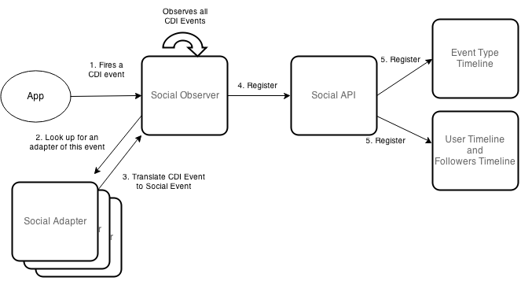
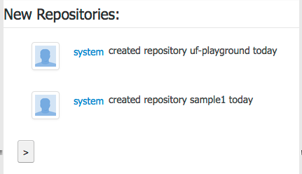
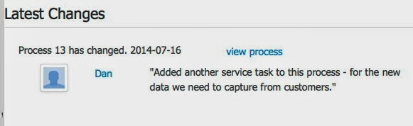

Kie Uberfire Social Activities
The Uberfire Framework, has a new extension: Kie Uberfire Social Activities. In this initial version this Uberfire extension will provided an extensible architecture to capture, handle, and present (in a timeline style) configurable types of social events.
- Basic Architecture
An event is any type of “CDI Event” and will be handled by their respective adapter. The adapter is a CDI Managed Bean, which implements SocialAdapter interface. The main responsibility of the adapter is to translate from a CDI event to a Social Event. This social event will be captured and persisted by Kie Uberfire Social Activities in their respectives timelines (basically user and type timeline).
That is the basic architecture and workflow of this tech:
 |
| Basic Architecture |
- Timelines
There is many ways of interact and display a timeline. This session will briefly describe each one of them.
a-) Atom URL
Social Activities provides a custom URL for each event type. This url is accessible by: http://project/social/TYPE_NAME.
The users timeline works on the same way, being accessible by http://project/social-user/USER_NAME .
Another cool stuff is that an adapter can provide his pluggable url-filters. Implementing the method getTimelineFilters from SocialAdapter interface, he can do anything that he want with his timeline. This filters is accessible by a query parameter, i.e. http://project/social/TYPE_NAME?max-results=1 .
B-) Basic Widgets
Social Activities also includes some basic (extendable) widgets. There is two type of timelines widgets: simple and regular widgets.
 |
| Simple Widget |
 |
| Regular Widget |
The “>” symbol on ‘Simple Widget’ is a pagination component. You can configure it by an easy API. With an object SocialPaged( 2 ) you creates a pagination with 2 items size. This object helps you to customize your widgets using the methods canIGoBackward() and canIGoForward() to display icons, and forward() and backward() to set the navigation direction.
The Social Activities component has an initial support for avatar. In case you provide an user e-mail for the API, the gravatar image will be displayed in this widgets.
C-) Drools Query API
Another way to interact with a timeline is throught the Social Timeline Drools Query API. This API executes one or more DRLs in a Timeline in all cached events. It’s a great way to merge different types of timelines.
- Followers/Following Social Users
A user can follow another social user. When a user generates a social event, this event is replicated in all timelines of his followers. Social also provides a basic widget to follow another user, show all social users and display a user following list.
It is important to mention that the current implementation lists socials users through a “small hack”. We search the uberfire default git repository for branch names (each uberfire user has his own branch), and extract the list of social users.
This hack is needed as we don’t have direct access of the user base (due the container based auth).
- Persistence Architecture
The persistence architecture of Social Activities is build on two concepts: Local Cache and File Persistence. The local cache is a in memory cache that holds all recent social events. These events are kept only in this cache until the max events threshold is reached. The size of this threshold is configured by a system property org.uberfire.social.threshold (default value 100).
When the threshold is reached, the social persist the current cache into the file system (system.git repository – social branch). Inside this branch there is a social-files directory and this structure:
- userNames: file that contains all social users name
- each user has his own file (with his name), that contains a Json with user data.
- a directory for each social type event .
- a directory “USER_TIMELINE” that contains specific user timelines
Each directory keeps a file “LAST_FILE_INDEX” that point for the most recent timeline file.
Inside each file, there is a persisted list of Social Events in JSON format:
({“timestamp”:”Jul16,2014,5:04:13PM”,”socialUser”:{“name”:”stress1″,”followersName”:[],”followingName”:[]},”type”:”FOLLOW_USER”,”adicionalInfo”:[“follow stress2”]})
Separating each JSONs there is a HEX and the size in bytes of the JSON. The file is read by social in reverse order.
The METADATA file current hold only the number of social events on that file (used for pagination support).
It is important to mention that this whole structure is transparent to the widgets and pagination. All the file structure and respective cache are MERGED to compose a timeline.
- Clustering
In case that your application is using Uberfire in a cluster environment, Kie Social Activities also supports distributed persistence. His cluster sync is build on top of UberfireCluster support (Apache Zookeeper and Apache Helix).
Each node broadcast social events to the cluster via a cluster message SocialClusterMessage.NEW_EVENT containing Social Event data. With this message, all the nodes receive the event and can store it on their own local cache. In that point all nodes caches are consistent.
When a cache from a node reaches the threshold, it lock the filesystem to persist his cache on filesystem. Then the node sends a SOCIAL_FILE_SYSTEM_PERSISTENCE message to the cluster notifying all the nodes that the cache is persisted on filesystem.
If during this persistence process, any node receives a new event, this stale event is merged during this sync.
- Stress Test and Performance
In my github account, there is an example Stress Test class used to test the performance of this project. This class isn’t imported to our official repository.
The results of that test, find out that Social Actitivies can write ~1000 events per second in my personal laptop (Mb Pro, Intel Core i5 2.4 GHZ, 8Gb 1600MHz DDR3, SSD). In a single instance enviroment, it writes 10k events in 7s, writed 100k in 48s, and 500k events in 512s.
- Demo
A sample project of this feature can be found at my GitHub account or you can just download and install the war of this demo. Please take a note that this repository moved from my account to our official uberfire extensions repository.
- Roadmap
This is an early version of Kie Uberfire Social Activities. In the nexts versions we plan to provide:
- A “Notification Center” tool, inspired by OSX notification tool; (far term)
- Integrate this project with dashbuilder KPI’s;(far term)
- A purge tool, able to move old events from filesystem to another persistence store; (short term)
- In this version, we only provide basic widgets. We need to create a way to allow to use customized templates on this widgets.(near term)
- A dashboard to group multiple social widgets.(near term)
If you want start contributing to Open Source, this is a nice opportunity. Fell free to contact me!

{kind=link}
{kind=link}
{kind=link}
{kind=link}
{kind=link}
{kind=link}